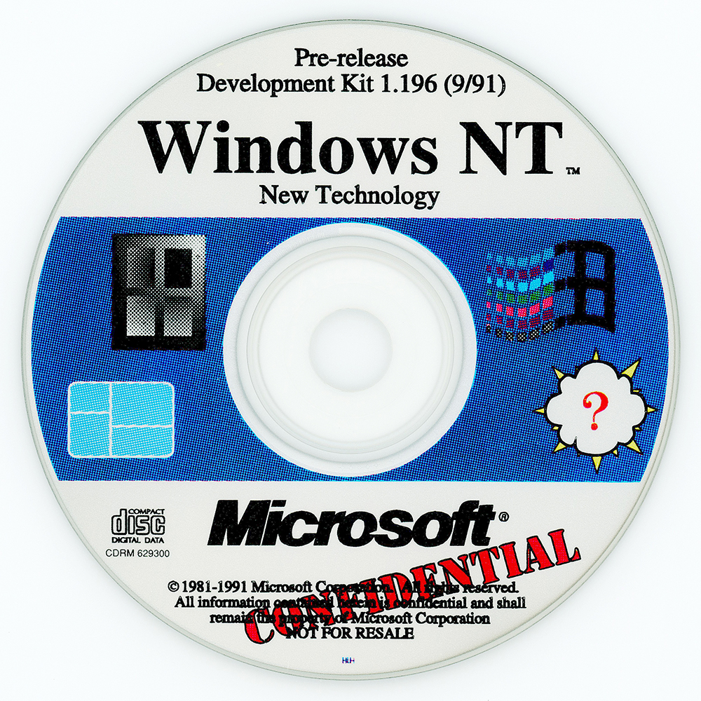

Shop
Explore our collection of Windows NT 3.1 memorabilia and related products:

Windows NT 3.1 T-shirt
Commemorate the legacy of Windows NT 3.1 with this exclusive T-shirt.

Windows NT 3.1 CD
Own a piece of history with this original Windows NT 3.1 installation CD.